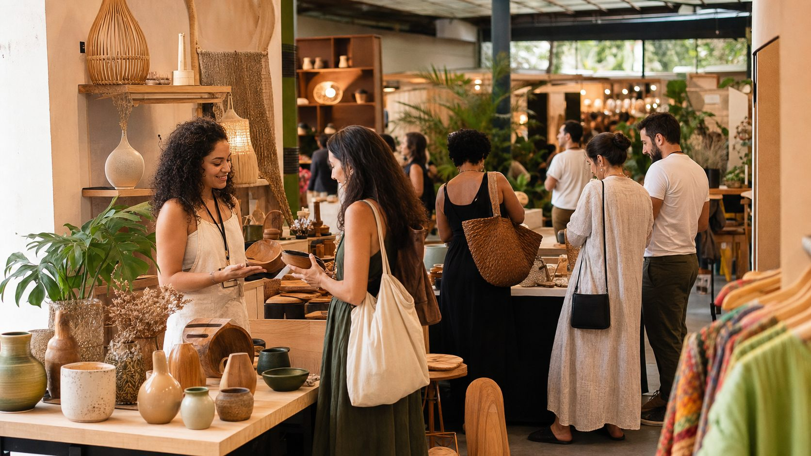
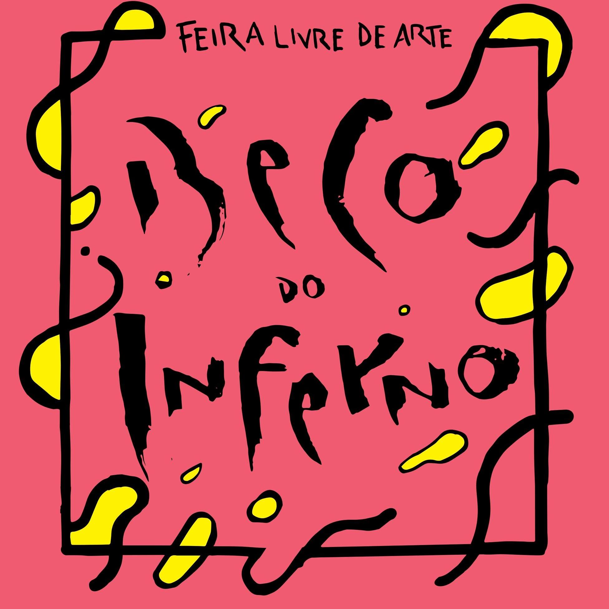
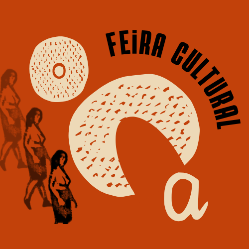
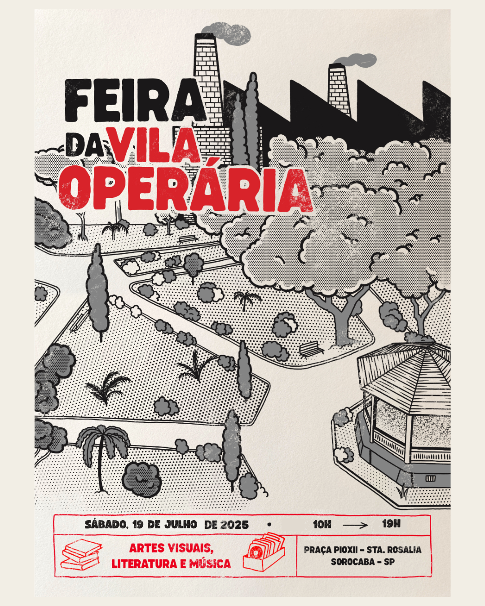
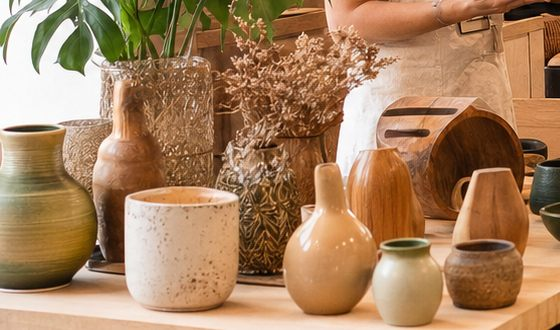
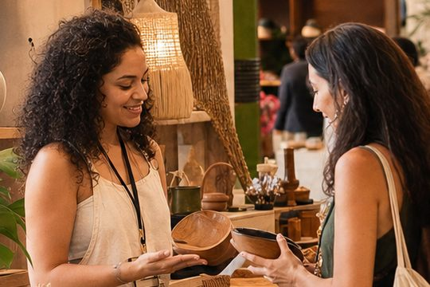
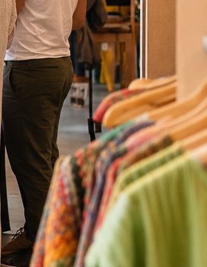

Arte, memória e geração de renda
Feiras que fazem a cultura circular por Sorocaba.
O sistema BECO organiza as feiras da Associação Cultural de Fomento à Arte e Memória de Sorocaba e Região, aproximando público, expositores e curadoria.

Feira Beco do InfernoProdução artística local e economia criativa desde 2016.
Próxima feira
Feira Beco do Inferno
Um encontro cultural mensal no Centro de Sorocaba, reunindo artesanato, artes visuais, moda sustentável e gastronomia.

Desde 2016
Feira Beco do Inferno
Há dez anos, a Feira Beco do Inferno ocupa o Centro de Sorocaba com arte autoral, artesanato, moda, gastronomia e encontros que valorizam quem cria na cidade. Cada edição celebra a cultura independente e aproxima diferentes públicos em torno da economia criativa.
Artes visuaisArtesanatoModa sustentávelGastronomia
Nossas feiras
Ver todasUma rede de encontros com histórias diferentes.

Cultura local
OCA Feira Cultural
Um espaço de encontro para produção autoral e comunidade.
Conhecer a feira →
Quem fez a última feira
Diretório de expositoresExpositores que continuam fazendo parte da história.


